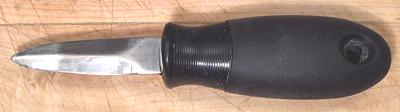

Oyster Knife / Clam Knife

Actually not a knife but a pry bar - the edges are quite dull. An oyster
knife is shown, a clam knife is much the same but with a longer blade. The
photo specimen is from Oxo and is a little odd in that most
Oyster Knives have a larger flange
where the handle meets the blade. I didn't find the smaller flange to be a
problem, but the blade proved a bit soft and bendy for our huge Pacific
oysters.
More on Knives.
kn_oystz 091203 - www.clovegarden.com
©Andrew Grygus - agryg@clovegaden.com - Photos on this
page not otherwise credited are © cg1 -
Linking to and non-commercial use of this page permitted